二次根式
【二次根式】
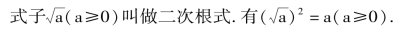
【算术平方根与绝对值的关系】
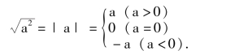
注意: 算术根不负.
【二次根式的性质】
(1) 积的算术平方根，等于积中各因式的算术平方根的积.
(2) 商的算术平方根，等于被除式的算术平方根除以除式的算术平方根.
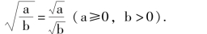
注意: 二次根式的性质要注意条件.
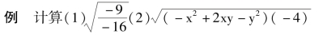
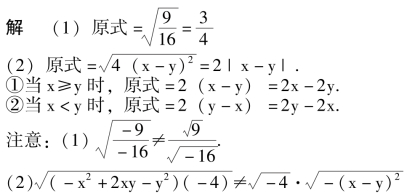
【最简二次根式】
符合下列条件的叫最简二次根式.
(1) 被开方数的每一个因式的指数都小于根指数2；
(2) 被开方数不含分母.
例 把下列根式化成最简根式.
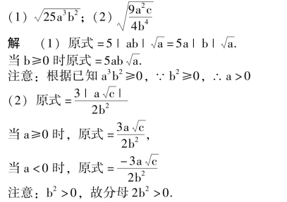
【同类二次根式】
几个二次根式化成最简根式后，被开方数相同时，这几个二次根式就叫做同类二次根式.
【二次根式的加减法则】
把各根式化成最简根式；合并同类根式；没有同类根式的写在结果中.
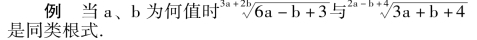
解同类根式应该根指数相同，被开方数相同.
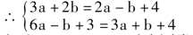
解出a ＝1，b ＝1 时为同类根式
【二次根式的乘法法则】
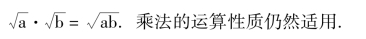
【二次根式的除法法则】
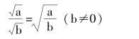
【分母有理化】
把分母中的根号化去，叫分母有理化.
【有理化因式】
两个含有二次根式的代数式相乘，如果它们的积不含有二次根式，这样两个代数式叫互为有理化因式，也叫共轭根式.
【形如A±2 B的开平方】
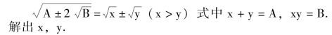
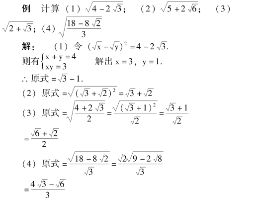
说明: (1) 要注意把被开方数变成A±2 B的形式，再进行配完全平方或用待定系数法(解方程组)；(2) 结果是算术根，要不负(大于或等于零).